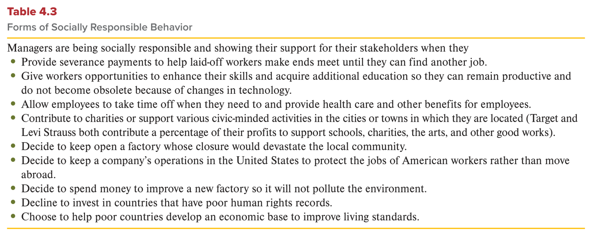
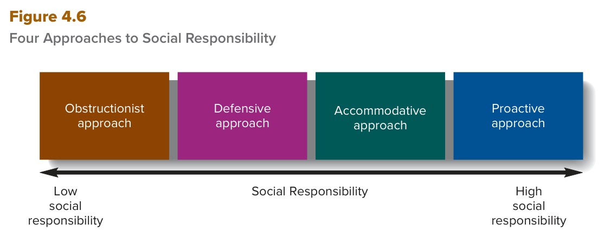

MGT 102 · Chapter 4 · Section 4 of 4:
Approaches to Social Responsibility
Objective LO4-6: Distinguish among the four main approaches toward social responsibility that a company can take.
In the previous lesson you saw that a company's ethics come from four sources: societal, occupational, individual, organizational. Now we see what comes out of them: the company's stance on social responsibility — how the company sees its duty toward its stakeholders and toward society as a whole.
The heart of the lesson is Figure 4.6: four approaches on a ladder from the lowest responsibility to the highest — obstructionist → defensive → accommodative → proactive. The exam likes to give you a company scenario and ask which approach it is, or to flip the order on you. After that you see why a company should be responsible at all (reputation and more), and how culture and the ethics officer turn ethics into a daily habit, not just a piece of paper.
And the numbers, as always in this chapter: 4 approaches, 9 forms in Table 4.3, 3 reasons to be responsible (the book numbers two and brings the third with Moreover — we count it as the third), and 3 responsibilities for the ethics officer. Take the English definitions exactly as they are from the EXAM BOX.
The book draws a chain you must memorize: a company's ethics are the result of the differences in the four sources, and the company's ethics in turn determine its stance on social responsibility.
The four sources (societal · organizational · occupational · individual) → the company's ethics → its stance on social responsibility
| Term | The book's definition (memorize it word for word) | What it means |
|---|---|---|
| Social responsibility المسؤولية الاجتماعية |
The way a company's managers and employees view their duty or obligation to make decisions that protect, enhance, and promote the welfare and well-being of stakeholders and society as a whole. | the way managers and employees see their duty or obligation to make decisions that protect, enhance, and promote the welfare and well-being of stakeholders and society as a whole. |
As the book said before: when no laws specify how a company should act toward stakeholders, managers must decide the right, ethical, and socially responsible thing to do. And because business ethics differ from company to company, companies reach different positions on their responsibility toward stakeholders.
The book says many decisions signal what a company believes about its obligations. Its three examples:
Companies that try to hide problems like these = show little regard for social responsibility. Here are the book's examples side by side:
| ❌ Hiding and delaying | ✅ A voluntary recall |
|---|---|
| GM and Ford tried in the past to hide that several of their
vehicles had defects that made them
dangerous to drive. They were penalized with
hundreds of millions of dollars in damages, and today they move more quickly to
recall vehicles and fix
problems.
Mary Barra, CEO of General Motors, admitted that the company did not react fast enough when a fault was found with an ignition switch — the recall eventually reached more than 10 million cars worldwide. |
Fitbit voluntarily recalled its activity tracking wrist band, the Fitbit Force, because of skin rash issues. It offered to send customers a return kit, and promised a reimbursement check or an exchange within two to six weeks of receipt. |
The rule the book draws: the way a company announces business problems or admits its mistakes gives strong clues about its stance on social responsibility.

This is Table 4.3 in the book. It starts with one sentence: Managers are being socially responsible and showing their support for their stakeholders when they… and then 9 bullet points, each one an action that proves the manager is socially responsible. How to read it: every line completes the first sentence — “the manager is socially responsible when he…”. What they ask about it: they give you an action and ask whether it is a form of responsible behavior, or they bring a NOT question with an action that is the opposite of one of the points (like “moves the jobs abroad” or “invests in a country with a poor record”).
All nine points — grouped by who benefits so they stick (3 + 2 + 1 + 1 + 2 = 9):
| # | Table 4.3 (the book's words) | In simple words | Who benefits |
|---|---|---|---|
| 1 | Provide severance payments to help laid-off workers make ends meet until they can find another job. | Severance pay that helps laid-off workers live until they find a new job | employees |
| 2 | Give workers opportunities to enhance their skills and acquire additional education so they can remain productive and do not become obsolete because of changes in technology. | chances to build skills and learn more, so they stay productive and do not become obsolete as technology changes | |
| 3 | Allow employees to take time off when they need to and provide health care and other benefits for employees. | time off when they need it, plus health care and other benefits | |
| 4 | Contribute to charities or support various civic-minded activities in the cities or towns in which they are located. | give to charities or support community activities in their cities — the book's example: Target and Levi Strauss give a percentage of their profits to schools, charities, and the arts | the local community |
| 5 | Decide to keep open a factory whose closure would devastate the local community. | keep a factory open if closing it would devastate the local community | |
| 6 | Decide to keep a company's operations in the United States to protect the jobs of American workers rather than move abroad. | keep the company's operations inside the U.S. to protect American jobs instead of moving abroad | the country's jobs |
| 7 | Decide to spend money to improve a new factory so it will not pollute the environment. | spend money on a new factory so it does not pollute the environment | the environment |
| 8 | Decline to invest in countries that have poor human rights records. | Refuse to invest in countries with a bad record in human rights | the world |
| 9 | Choose to help poor countries develop an economic base to improve living standards. | help poor countries build an economic base that raises living standards |
A company's ethics are the result of differences in societal, organizational, occupational, and individual ethics. In turn, a company's ethics determine its stance on social responsibility. A company's stance on social responsibility is the way its managers and employees view their duty or obligation to make decisions that protect, enhance, and promote the welfare and well-being of stakeholders and society as a whole.
Companies that try to hide such problems show little regard for social responsibility. The way a company announces business problems or admits its mistakes provides strong clues about its stance on social responsibility.
The book says: the strength of companies' commitment to social responsibility can range from low to high, and on that range sit four approaches in order.

This is Figure 4.6 in the book. Four boxes side by side above an arrow called Social Responsibility: the left end says Low social responsibility and the right end says High social responsibility. How to read it, from left to right: Obstructionist approach → Defensive approach → Accommodative approach → Proactive approach — each box has more responsibility than the one before it. So this is a graded ladder, not four separate types. What they ask about it: the order from lowest to highest, which approach is higher or lower than another, or they describe a company and ask where it sits on the ladder. Memorize the first letters: O – D – A – P.
| # | Approach | In Arabic | What it does, in short | Legal? | Ethical? |
|---|---|---|---|---|---|
| 1 (lowest) | Obstructionist | المعرقِل | chooses not to be responsible, breaks the rules and hides it | often no | no |
| 2 | Defensive | الدفاعي | obeys the law only — nothing above it | yes | not always — can and often do act unethically |
| 3 | Accommodative | التوفيقي | legal and ethical, and balances stakeholders as the need arises | yes | yes |
| 4 (highest) | Proactive | الاستباقي | actively takes on responsibility, and goes out of its way to serve all stakeholders | yes | yes |
The last two steps (accommodative and proactive) are in the next concept. Here we look closely at the first two.
| The book's definition (memorize it word for word) | What it means |
|---|---|
| Companies and their managers choose not to behave in a socially responsible way and instead behave unethically and illegally. | companies and their managers choose not to act in a socially responsible way, and instead they act unethically and illegally. |
The text adds: they do all they can to prevent knowledge of their behavior from reaching the other stakeholders and society. So the mark of this approach = hiding. Most of the book's examples are about hiding (and Enron: managers stopped employees selling while they sold their own shares):
| Company | What it hid or did |
|---|---|
| Manville Corporation | its managers tried to hide evidence that asbestos causes lung damage |
| Tobacco companies | tried to hide evidence that cigarette smoking causes lung cancer |
| Lehman Brothers | in 2010 it came out that its managers used loopholes in UK law to hide billions of dollars of worthless assets on its balance sheet and disguise its poor financial condition. Its bankruptcy helped propel the 2008–2009 financial crisis |
| Enron | top managers stopped employees from selling Enron shares in their pension funds, while they themselves sold hundreds of millions of dollars' worth of their own stock. Most employees lost all their retirement savings |
| Arthur Andersen | senior partners told their employees to shred files — the result was a loss of reputation and devastation for the organization and all its stakeholders |
The book's sentence after the Enron and Arthur Andersen examples: These companies are no longer in business — those two companies no longer exist. (The book does not say this about Manville, the tobacco companies, or Lehman Brothers.)
| The book's definition (memorize it word for word) | What it means |
|---|---|
| Companies and their managers behave ethically to the degree that they stay within the law and strictly abide by legal requirements. | they behave ethically only as far as the law goes: they stay inside the law and abide strictly by legal requirements. |
The book's examples:
Bottom line: when these managers make ethical decisions, they put their own interests first and commonly harm other stakeholders.
The strength of companies' commitment to social responsibility can range from low to high (see Figure 4.6). At the low end of the range is an obstructionist approach, in which companies and their managers choose not to behave in a socially responsible way. Instead they behave unethically and often illegally and do all they can to prevent knowledge of their behavior from reaching other organizational stakeholders and society at large.
A defensive approach indicates at least some commitment to ethical behavior. Defensive companies and managers stay within the law and abide strictly by legal requirements but make no attempt to exercise social responsibility beyond what the law dictates; thus, they can and often do act unethically. When making ethical decisions, such managers put their own interests first and commonly harm other stakeholders.
| The book's definition (memorize it word for word) | What it means |
|---|---|
| Companies and their managers behave legally and ethically and try to balance the interests of different stakeholders as the need arises. | companies and their managers act legally and ethically, and try to balance the interests of different stakeholders as the need arises. |
| The book's definition (memorize it word for word) | What it means |
|---|---|
| Companies and their managers actively embrace socially responsible behavior, going out of their way to learn about the needs of different stakeholder groups and using organizational resources to promote the interests of all stakeholders. | companies and their managers actively embrace socially responsible behavior, going out of their way to learn what different stakeholder groups need, and use the organization's resources to serve the interests of all stakeholders. |
The text makes it clear: not only shareholders, but employees and communities too. The main example is Nucor (a U.S. steelmaker) — learn the sequence:
| Year | What happened |
|---|---|
| 1977 | the visionary CEO Ken Iverson announced that Nucor had never laid off one employee in its history, and even though a major recession was raging, it did not plan to start now. |
| 2009 | CEO Daniel R. DiMicco announced that, again, there would be no layoffs — even though its mills were running at only 50% of capacity (95% just months earlier), because customers had slashed orders in the recession. Rivals laid off thousands, and Nucor stayed loyal to its employees. |
| But… | no layoffs, but managers and employees took major cuts in pay and bonuses to weather the storm together, as they always had, and they searched for ways to reduce operating costs so everyone would benefit when the economy recovered. |
| 2012 | the sacrifice paid off: Nucor was doing well again. |
| 2022 | it paid a cash dividend to shareholders for the 198th consecutive quarter. |
The causes proactive companies are often at the forefront of — the book separates them with semicolons into four phrases:
Companies with reputations for being proactive in supporting stakeholders such as their suppliers or the communities they work in: McDonald's, Google, REI, Whole Foods, Target.
This box is a detailed example of a proactive company in employee diversity. Its main points:
An accommodative approach acknowledges the need to support social responsibility. Accommodative companies and managers agree that organizational members ought to behave legally and ethically, and they try to balance the interests of different stakeholders so the claims of shareholders are seen in relation to the claims of other stakeholders. This approach is the one taken by the typical large U.S. company, which has the most to lose from unethical or illegal behavior.
Companies and managers taking a proactive approach actively embrace the need to behave in socially responsible ways. They go out of their way to learn about the needs of different stakeholder groups and are willing to use organizational resources to promote the interests not only of shareholders, but also of the other stakeholders such as their employees and communities.
The book says many advantages come when a company acts in a socially responsible way, and it numbers only two of them (First and A second major reason); the third comes with Moreover — we count it as the third one to make it easy to remember:
| # | Reason | Details |
|---|---|---|
| 1 | Reputation | Showing social responsibility helps a company build a good reputation.
Reputation here = the trust, goodwill, and
confidence others have in a company that lead them to want to do business with it
— so people want to deal with it.
The rewards of a good reputation: increased business and improved ability to obtain resources from stakeholders. So reputation raises profitability and builds shareholder wealth. |
| 2 | Costs in a capitalist system | In a capitalist system, companies as well as the government have to bear the costs of protecting stakeholders, providing health care and income, paying taxes, and so on. So if all companies in a society act responsibly, the quality of life as a whole increases. |
| 3 | Companies shape society's values | How companies treat their employees decides many of a society's values and norms and the ethics of its citizens. It has been suggested that if all organizations adopted a caring approach and agreed that their responsibility is to promote the interests of their employees, a climate of caring would pervade the wider society. |
The countries experts point to as places where organizations are highly socially responsible — five countries: Japan, Sweden, Germany, the Netherlands, Switzerland. The result there:
Bottom line: business activity affects every part of people's lives, so how business behaves toward stakeholders decides how stakeholders behave toward business. And the book's Summary and Review at the end of the chapter puts it like this: the rewards of acting in a socially responsible way = a good reputation + the support of all stakeholders → and so superior company performance.
Several advantages result when companies and their managers behave in a socially responsible manner. First, demonstrating its social responsibility helps a company build a good reputation. Reputation is the trust, goodwill, and confidence others have in a company that lead them to want to do business with it. The rewards for a good company reputation are increased business and improved ability to obtain resources from stakeholders.
A second major reason for companies to act responsibly toward employees, customers, and society is that, in a capitalist system, companies as well as the government, have to bear the costs of protecting their stakeholders, providing health care and income, paying taxes, and so on. So if all companies in a society act responsibly, the quality of life as a whole increases.
The rewards from behaving in a socially responsible way are a good reputation, the support of all organizational stakeholders, and thus superior company performance.
The manager can also give a visible means of support to an ethical culture. And more and more organizations are creating the role of ethics officer to monitor their ethical practices and procedures.
| Term | The book's definition (memorize it word for word) | What it means |
|---|---|---|
| Ethics officer مسؤول الأخلاقيات |
A manager responsible for communicating and teaching ethical standards to all employees and monitoring their conformity to those standards. | a manager whose job is to explain and teach ethical standards to all employees, and to watch their conformity to them. |
His three responsibilities, as the text lists them:
The ending: ethical organizational cultures encourage members to behave in a socially responsible way. The company that epitomizes the ethical, socially responsible firm is Johnson & Johnson: its values and norms, along with its credo (Figure 4.5 in lesson 3), have guided its managers to the right decision in difficult situations for decades.
When ethical values and norms such as these are part of an organization's culture, they help organizational members resist self-interested action because they recognize that they are part of something bigger than themselves.
Increasingly, organizations are creating the role of ethics officer, to monitor their ethical practices and procedures. The ethics officer is responsible for communicating ethical standards to all employees, designing systems to monitor employees' conformity to those standards, and teaching managers and employees at all levels of the organization how to respond to ethical dilemmas appropriately. Because the ethics officer typically has organizationwide authority, organizational members in any department can communicate instances of unethical behavior by their managers or coworkers without fear of retribution.
Some organizations have an organizationwide ethics committee to provide guidance on ethical issues and help write and update the company code of ethics.
The questions are in English because the exam is in English. Answer first, then open the solution. If you miss question 1, go back to the trap “legal is not always ethical”; if you miss question 4, go back to “as the need arises against going out of their way”.
B. “Stays within the law + nothing beyond what the law dictates” is the description of the defensive approach word for word, and selling shares before the other shareholders is the book's own example of defensive managers (acting on inside information is illegal but hard to prove). The trap in A: the obstructionist approach breaks the law and hides its behavior, and this company stays inside the law. C is a trap too: the accommodative approach is legal and ethical and balances stakeholders — here the managers put their own interests first. And D is the farthest from the truth: the proactive approach goes out of its way for all stakeholders.
A. In Figure 4.6 the arrow runs from Low social responsibility (left) to High social responsibility (right), and the boxes are in the order O – D – A – P. The trap in D: the same order but reversed (from highest to lowest) — it would be right if the question said high to low, but it said low to high. B and C swap two neighboring steps to catch you if you memorized the names without the order.
C. The table says the exact opposite: Decide to keep a company's operations in the United States to protect the jobs of American workers rather than move abroad. The trap: the question uses NOT, and A, B, and D are taken word for word from the table so that you rush. Watch B in particular: if you read fast you may think it says “invest” — but it says decline = refuse.
C. This is the book's Nucor example (2009, 50% of capacity, no layoffs, with cuts in pay and bonuses), and goes out of its way + not only shareholders = the definition of the proactive approach. The trap in B: the accommodative approach balances stakeholders as the need arises — a reaction, not taking the first step. A is a trap: the defensive approach does nothing beyond the law, and no law stops layoffs.
B. Organizationwide authority + without fear of retribution + communicating standards and monitoring conformity = exactly the ethics officer, and he is a manager. The trap in A: the ethics committee is a committee, not a person, and its job is guidance and helping write and update the code of ethics. D is a trap: every manager is an ethical role model because employees copy him, but that is not a formal role with authority and monitoring. And C: the board of directors watches top managers (lesson 3); it does not take reports from employees.
| Term | What it means | Watch out for |
|---|---|---|
| Social responsibility | The way managers and employees view their duty to make decisions that protect, enhance, and promote the welfare of stakeholders and society | about stakeholders and society as a whole; three verbs protect, enhance, and promote; the company's ethics decide it |
| Forms of socially responsible behavior | The nine actions listed in Table 4.3 | 9 forms; keep the operations and the factory, and decline to invest in countries with poor records |
| Obstructionist approach | Choosing not to be socially responsible: acting unethically and illegally, and hiding it | the lowest; the only one called illegally; hides (Manville · Enron · Arthur Andersen · Lehman) |
| Defensive approach | Behaving ethically only as far as the law requires | inside the law but can be unethical; at least some commitment; nothing beyond the law |
| Accommodative approach | Legal and ethical, balancing stakeholders' interests as the need arises | as the need arises; the approach of the typical large U.S. company |
| Proactive approach | Actively embracing social responsibility and serving all stakeholders | the highest; going out of their way; all stakeholders (Nucor, Bitty & Beau's) |
| Insider trading | Selling or buying shares using inside information | illegal but hard to prove (the defensive example); SAC Capital paid $1.8 billion — the biggest settlement |
| Reputation | The trust, goodwill, and confidence others have in a company that lead them to want to do business with it | this lesson's definition; not lesson 2's (esteem or high repute) |
| Caring approach / climate of caring | Organizations promoting their employees' interests, so caring spreads through society | the third reason; the five countries: Japan, Sweden, Germany, the Netherlands, Switzerland |
| Ethical role model | A manager whose behavior employees watch and copy | every manager; if top managers are unethical, employees are not likely to behave ethically |
| Ethics officer | A manager responsible for communicating and teaching ethical standards and monitoring conformity to them | a manager; 3 responsibilities; organizationwide authority → report without fear |
| Ethics committee | An organizationwide committee that gives guidance on ethical issues | a committee, not a person; helps write and update the code of ethics |
These are the general English words on this page, not the management terms. Learn them and the textbook gets much easier to read.
| Word | Part of speech | العربية | Example sentence from this lesson |
|---|---|---|---|
| abide | verb | يلتزم بـيعني تمشي على القانون أو القاعدة وما تطلع عنها | Defensive companies and managers stay within the law and abide strictly by legal requirements. |
| acknowledge | verb | يعترف بـيعني تقول: إيه صح، هذا موجود وأنا أقبله | An accommodative approach acknowledges the need to support social responsibility. |
| conformity | noun | التزام / مطابقةيعني الناس يمشون على نفس القواعد المطلوبة بالضبط | The ethics officer designs systems to monitor employees' conformity to ethical standards. |
| consecutive | adjective | متتالييعني ورا بعض بدون ولا انقطاع، واحد بعد واحد | In 2022, Nucor paid a cash dividend to shareholders for the 198th consecutive quarter. |
| curb | verb | يكبح / يحدّ منيعني توقف الشي أو تخففه قبل لا يكبر، زي الفرامل | The older and more reputable a company, the more likely its managers are to curb attempts by their employees to act unethically. |
| defective | adjective | معيب / فيه خلليعني المنتج خربان أو فيه عيب من المصنع | A responsible company acts promptly and warns customers when a batch of defective merchandise has been accidentally sold. |
| devastate | verb | يدمّريعني يخرّب الشي كله تخريب كبير، ما يخلّي منه شي | Managers may decide to keep open a factory whose closure would devastate the local community. |
| dignity | noun | كرامةيعني إحساسك إنك محترم وقيمتك عالية قدام نفسك والناس | Sydney, an employee with Down syndrome, values the dignity of earning a paycheck. |
| disguise | verb | يخفي / يتنكّريعني تغطي الحقيقة بشكل ثاني عشان الناس ما يعرفونها | Bitty & Beau's Coffee calls itself a human rights movement disguised as a coffee shop. |
| embrace | verb | يتبنّى / يحتضنيعني تقبل الفكرة بكل قلبك وتمسكها وتشتغل فيها | Proactive companies and their managers actively embrace socially responsible behavior. |
| enhance | verb | يعزّز / يحسّنيعني تخلي الشي أحسن وأقوى من قبل | Social responsibility means making decisions that protect, enhance, and promote the well-being of stakeholders. |
| latitude | noun | حرية تصرّفيعني عندك مساحة واسعة تقرر فيها على كيفك | Insider trading is hard to prove because top managers have wide latitude regarding when they sell their shares. |
| loophole | noun | ثغرةيعني فتحة في القانون تخليك تطلع منه بدون ما تخالفه رسمياً | The managers of Lehman Brothers used loopholes in UK law to hide billions of dollars of worthless assets. |
| obligation | noun | التزام / واجبيعني شي لازم تسويه، مو على كيفك | Social responsibility is the way managers and employees view their duty or obligation to make decisions that protect stakeholders. |
| obsolete | adjective | متقادم / ما عاد يصلحيعني قديم وانتهى وقته، ما أحد يحتاجه الحين | Managers give workers chances to learn so they do not become obsolete because of changes in technology. |
| pervade | verb | ينتشر في / يعمّيعني يدخل في كل مكان لين يصير في كل زاوية | If all organizations adopted a caring approach, a climate of caring would pervade the wider society. |
| promptly | adverb | فوراً / بسرعةيعني على طول بدون تأخير | One decision that signals a company's stance is to act promptly and warn customers about defective products. |
| recall | verb | يسحب (منتج من السوق)يعني الشركة ترجّع المنتج من الناس لأن فيه مشكلة | Today GM and Ford move more quickly to recall vehicles to fix problems. |
| retribution | noun | انتقام / عقابيعني أحد يرد عليك بأذى لأنك سويت شي ضده | Employees in any department can report unethical behavior without fear of retribution. |
| scrutinize | verb | يفحص بدقةيعني تطالع في الشي بتركيز وتدقق في كل تفصيلة | Managers become ethical role models whose behavior is scrutinized by employees. |
| severance | noun | مكافأة نهاية الخدمةيعني فلوس تعطيها الشركة للموظف لما تنهي شغله | Managers provide severance payments to help laid-off workers make ends meet until they find another job. |
| shred | verb | يقطّع (ورق)يعني تقطّع الورق قطع صغيرة عشان ما أحد يقدر يقراه | Senior partners at Arthur Andersen instructed their employees to shred files. |
| slash | verb | يخفّض بقوةيعني تقص الرقم قص كبير ومرة وحدة | Nucor's mills ran at only 50% of capacity because customers had slashed orders in the recession. |
| voluntarily | adverb | طوعاً / من نفسهيعني تسويه باختيارك، ما أحد أجبرك | Fitbit voluntarily recalled its activity tracking wrist band, the Fitbit Force, because of skin rash issues. |
| weather | verb | يصمد في / يعدّييعني تتحمل الوقت الصعب لين يعدّي وأنت واقف | Managers and employees took major cuts in pay and bonuses to weather the storm together. |
| welfare | noun | رفاهية / مصلحةيعني راحة الناس وصحتهم وأمورهم الزينة | Social responsibility protects the welfare and well-being of stakeholders and society as a whole. |
Built from the text of the textbook Contemporary Management (Jones & George, McGraw Hill) —
Chapter 4: Ethics and Social Responsibility, section Approaches to Social Responsibility (with Four Different
Approaches, Why Be Socially Responsible?, and The Role of Organizational Culture), objective LO4-6
(pages 111–115), with the book's Summary and Review.
Summarized only: the Focus on DEI&B box
(Bitty & Beau's Commitment to Human Rights) is given by its main points. The Management in Action
exercises at the end of the chapter are not part of this lesson.